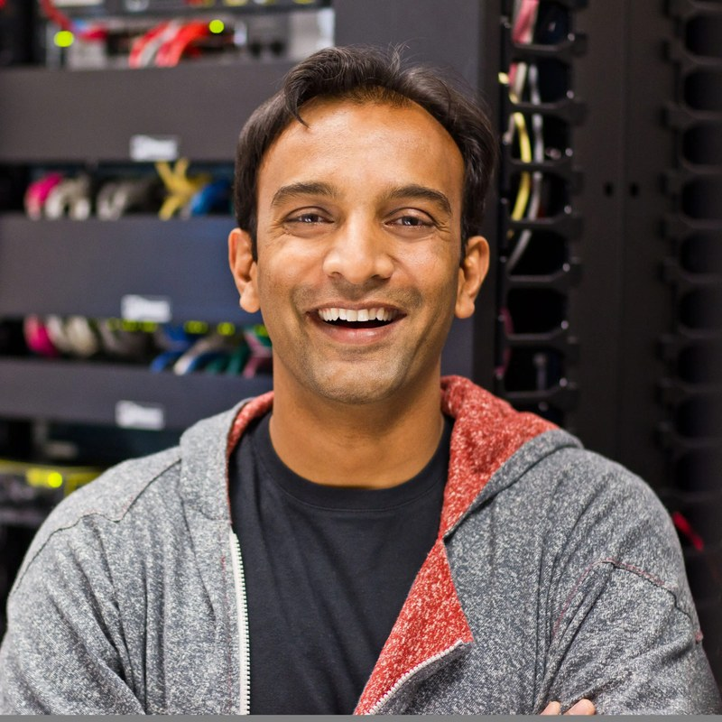

UC San Diego's flagship entrepreneurship fellowship.
Poseidon Fellows brings together twelve students across undergraduate, graduate, and PhD programs for six months of mentorship, investor access, and a curriculum on company-building taught by people who have done it.
Founders and investors aren’t made in classrooms alone.
Poseidon Fellows is UC San Diego’s entrepreneurship fellowship for ambitious dreamers, aspiring founders, and future investors across all levels of study. Modeled after programs like the Mayfield Fellows at Stanford, it exists for people who want to build and back things that matter.
Mentorship over lectures. The best founders and investors are shaped by real-world exposure and a community of peers pushing each other to think bigger.
Character counts. The future will be shaped not just by great technology, but by the judgment and ethics of the people building it.
No startup experience required. What matters is curiosity, a bias to action, and the drive to create something from nothing.
“Some of the most consequential companies of the next decade will be built by people who aren’t old enough to rent a car. Cursor was built out of a dorm room and acquired by SpaceX for $60 billion. I’m committed to making sure the next one will come from UC San Diego, and the Poseidon Fellows program exists to get them there faster.”
Shawn Xu, Partner at Lowercarbon Capital, UCSD ’12
What fellows get
Learn from people who have built, backed, and bet on startups.
Founder mentors
Operators who have started, scaled, and sold companies, paired with the cohort for candid guidance on whatever you're building.
Investor office hours
Direct time with venture investors to pressure-test ideas, learn how capital thinks, and build relationships early.
A curated curriculum
Company-building, venture, teamwork, and leadership, taught in lecture and reinforced by guests who lived it.
A tight-knit cohort
Twelve peers who share your drive and will push you to think bigger, during the program and long after.
How it runs
Biweekly classes, January through June.
Sessions run 5–7 PM on Wednesdays, every other week: an hour of lecture followed by an hour with a guest speaker and open Q&A. Guests are founders, executives, and investors.
Attendance at all sessions is mandatory. Exact 2027 dates will be shared with admitted fellows ahead of the program.
Roughly a dozen sessions across Winter and Spring quarters
Small-group format, twelve fellows in the room
Open to undergraduate, master's, PhD, and postdoctoral students at UC San Diego
A typical sessionWednesdays · 5–7 PM
60min
Lecture
Company-building, venture, teamwork, and leadership, taught by the chief lecturers.
60min
Guest speaker + Q&A
A founder, executive, or investor in conversation with the cohort. No slides, no filter.
2027 cohort
Application timeline
Six dates to know. Final deadline is 11:59 PM PT on Nov 12, 2026.
1
Sept 28
Application opens
2
Oct 7
Virtual info session
3
Nov 4
IRL info session
4
Nov 12
Application deadline
5
Nov 18
Interviews
6
Dec 4
Decisions sent
📅
Program runs January to June 2027. Sessions are every other Wednesday, 5–7 PM. Make sure you can commit to the full run before applying.
Teaching team
Chief lecturers
Shawn Xu
Partner, Lowercarbon Capital UCSD Alum
Shawn backs early-stage founders at Lowercarbon Capital, a multibillion-dollar venture fund investing in companies making real money slashing emissions, sucking carbon out of the sky, and buying us time to unf*ck the planet. Before that, he was an investor at Floodgate and Dorm Room Fund, where he wrote first checks to founders. He graduated from UC San Diego, the Wharton School, and the Lauder Institute. He grew up in Silicon Valley, and lives in San Francisco.
Co-founder
Prof. Elizabeth Lyons
Associate Professor, School of Global Policy and Strategy Director, Wavemaker Lab
Liz studies the economics of innovation and organizations, including how entrepreneurship programs change outcomes for the people who go through them. She teaches courses on start-ups and innovation policy at GPS, was the inaugural associate director of the Creative Destruction Lab at the University of Toronto, and received the Kauffman Junior Faculty Fellowship in Entrepreneurship Research.
Co-founder

Featured speaker
DJ Patil
Former U.S. Chief Data Scientist, The White House
The first person to hold the Chief Data Scientist role in the U.S. government, and one of the people who coined the term "data scientist." DJ has built and advised companies across Silicon Valley and now invests in early-stage founders.
“I met with these fellows and can confirm they are A++.”
The 2027 speaker lineup will be announced during the program.
Inaugural cohort · 2026
Our first twelve fellows
Engineers, scientists, and founders from across UC San Diego. Now alumni.
Sam is the co-founder of SunBreak, an energy startup focused on power optimization for farms. SunBreak won first place in the 2026 Basement Pitch Competition. Sam interned at the Los Angeles Department of Water and Power on projects driving the decarbonization of Los Angeles's energy system.
Ricardo Silva Buarque
PhD, Materials Science and Engineering
Ricardo develops computational chemistry software to simplify materials characterization for clean-energy applications, including clean hydrogen production and battery recycling. He is also an entrepreneur bringing footvolley, a fast-growing Brazilian beach sport, to the United States at scale.
Morgan Fitzgerald
PhD, Computational Neuroscience
Morgan's research focuses on cardiac signal processing and heart-brain dynamics, with an interest in translational applications to medtech and digital health.
Parth Jha
Master's, Mechanical Engineering
Parth has deployed emergency energy systems in typhoon-hit villages in the Philippines. He is building an edtech startup that powers an AI co-pilot for K-12 teachers.
Ethan Kam
Undergraduate, Business Economics and Data Science
Ethan founded a nonprofit in high school that procured thousands of donated shoes for local homeless shelters. Since completing the program, he is exploring new ideas and avenues for innovation.
Kiruthika Marikumaran
Master's, Electrical and Computer Engineering
Kiruthika is a serial hackathon winner, competing in nearly 10 hackathons in the past year and winning three. She has built AI products spanning healthcare, biotech, wearables, education, and consumer technology, was selected for Y Combinator Startup School 2026, and plans to found a student entrepreneurship organization at UC San Diego.
Valmik Nahata
Undergraduate, Data Science
Valmik investigates reasoning in clinical large language models at Massachusetts General Hospital. He previously founded a nonprofit matching thousands of students to research labs, developed NLP pipelines for pathology reports at Dartmouth Health, and is headed to MIT to research AI alignment.
Vincent Pavan
Master's, Bioengineering
Vincent is focused on biosensor research and technologies that improve human health.
Bhagya Ram
BS, Data Science
Bhagya is exploring how AI can improve the systems people rely on every day. She worked with the City of Carlsbad to develop the backend zoning intelligence framework powering a property selection platform designed to help thousands of small businesses cut through red tape.
Oviya Senthil
Undergraduate, Computer Engineering
Oviya is an organizer for DiamondHacks, San Diego's largest regional hackathon, and is interested in building safety-critical systems at the intersection of robotics, healthcare, and aerospace.
Magnus Wolff
Undergraduate, Structural Engineering
Magnus is exploring opportunities in maritime defense tech.
Fernando Zepeda
Undergraduate, Mechanical Engineering
Fernando founded and sold one of California's top-rated auto detailing businesses while still in high school. He is now looking to hard tech as his next frontier.
Who should apply
Eligibility
Any UC San Diego student
Undergraduates, master's students, PhD candidates, and postdocs are all eligible. Applications require a ucsd.edu email.
Any stage
You might already run a company, have an idea, want to join an early-stage startup, or want to become an investor. Startup experience is not required.
Available January to June 2027
Sessions every other Wednesday, 5–7 PM, with mandatory attendance. If you'll be away for a quarter, this is not your year.
Applications for the 2027 cohort open September 28.
A short application, three written answers, and a 60-second video. Deadline is Nov 12, 2026 at 11:59 PM PT.